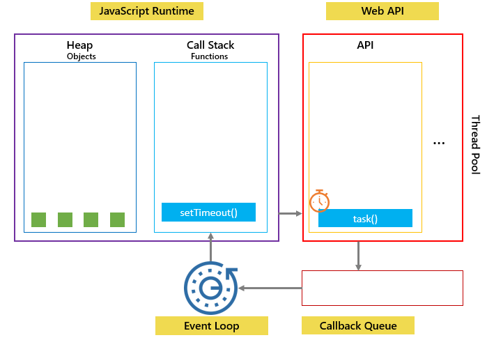
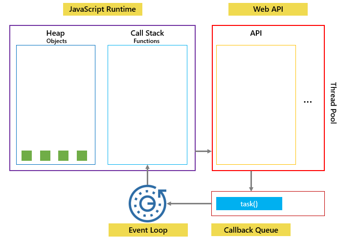
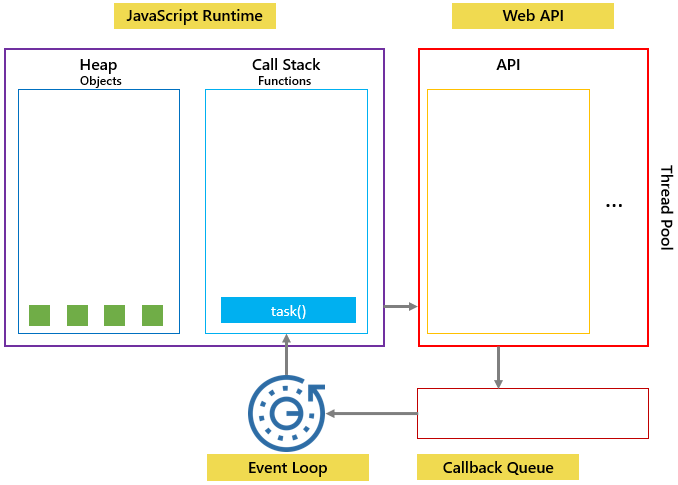
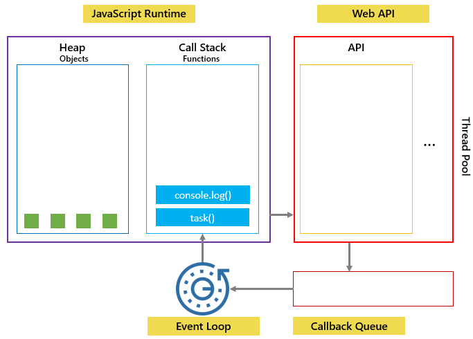

Primeiro, o setTimeout() é colocado na pilha de chamadas. Ele cria um temporizador na API da Web.
Em segundo lugar, após aproximadamente 3 segundos, o cronômetro expira, taské enviado para a fila de retorno de chamada e aguarda a próxima oportunidade de execução.
Terceiro, como a pilha de chamadas está vazia, o loop de eventos remove o task() da fila de retorno de chamada, o coloca na pilha de chamadas e o executa:
Quarto, o console.log() no setTimeout() executa que cria um novo contexto de execução da função.
